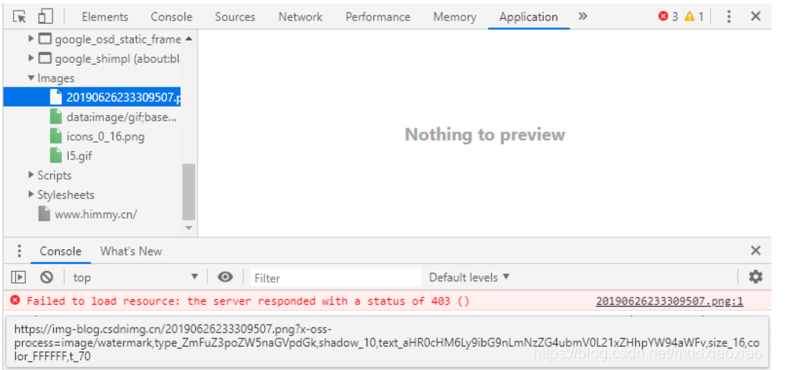
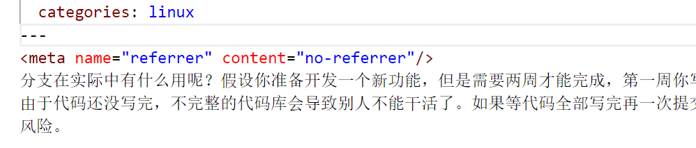
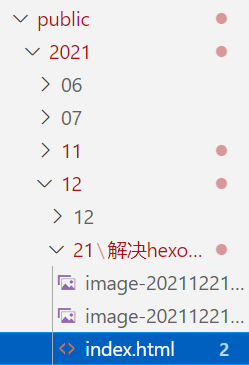
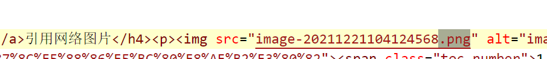

解决hexo博客无法正常加载图片问题
在hexo框架中，引用图片一直是一个需要注意的问题，有两种格式，一种是网络图片，一种是本地图片，这里分开讲。
引用网络图片
hexo由于版本兼容问题，有些网络图片资源加载中会报403错误

这种情况的解决方案很简单，在文章头部的front-matter和正文之间的位置添加代码
1 | <meta name="referrer" content="no-referrer"/> |

即可解决问题，原理是此位置添加代码后，hexo g 命令渲染html的时候，会将此代码添加到html文件的head中。http 协议中，如果从一个网页跳到另一个网页，http 头字段里面会带个 Referrer。图片服务器通过检测 Referrer 是否来自规定域名，来进行防盗链。如果没有设置referrer，那就可以直接绕过防盗链机制，直接使用或盗取。具体的referrer值和相关知识见另一篇文章。
引用本地图片
1、修改配置文件
配置_config.yml文件中 post_asset_folder:false 修改为false，修改之后，每次通过hexo命令新建文章（如：hexo new post xxx）会自动在对应的目录下（默认是source/_post/目录）生成与文章同名的文件夹来存放图片，并且hexo g 渲染的时候，会将图片渲染到与文章的html页面同层目录下，注意，由于是同层目录，所以在写图片路径的时候，注意要成相对路径下仅文件名的地址。如下图所示

2、图片路径映射
本篇文章生成到目录public/2021/12/21/解决hexo博客无法正常加载图片问题/，目录下，图片和html文件在同层目录下，所以图片路径要写成如图所示
在html文件下为：
如此，html文件就可以以相对路径的方法找到图片正常渲染。
本博客所有文章除特别声明外，均采用 CC BY-NC-SA 4.0 许可协议。转载请注明来自 nccoder！